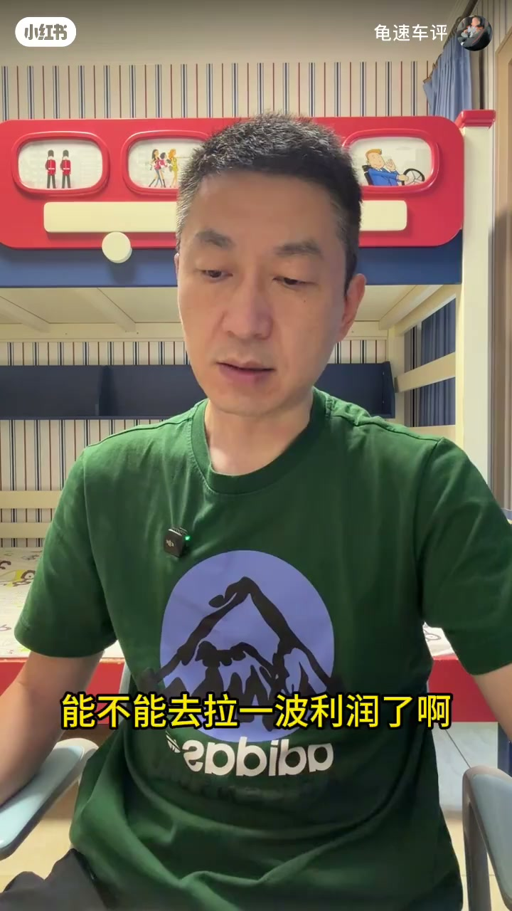
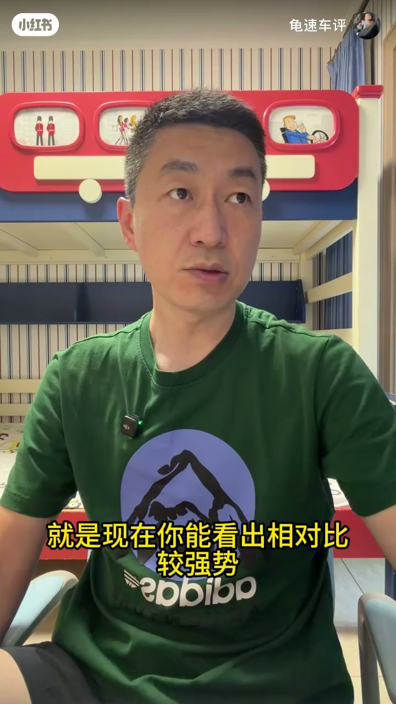
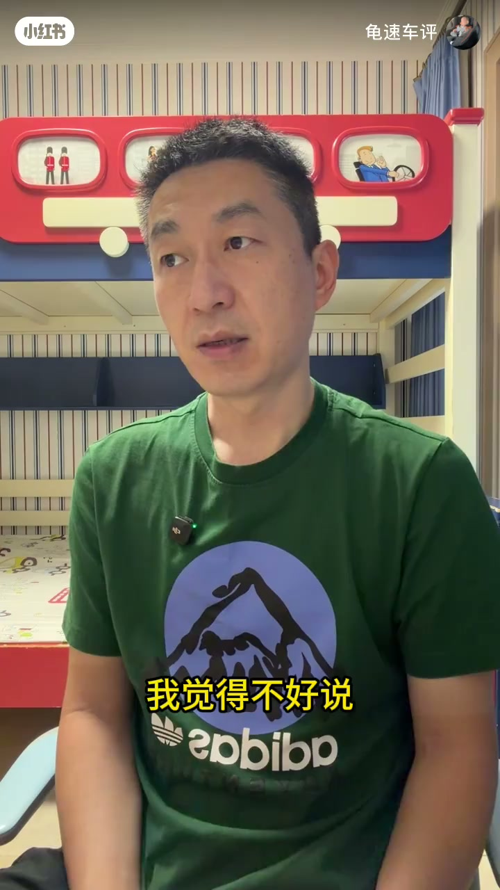
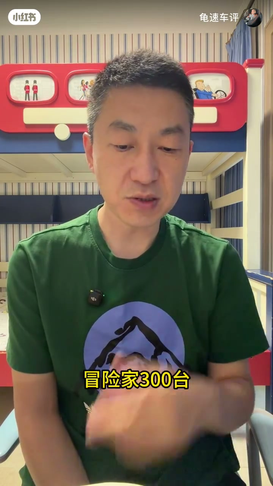

01
中文
我们今天分析6月销量的最后一篇。
EN
Today is the last piece of our June sales analysis.
表达提示sales analysis（销量分析）
Scene English · 燃油车销量与购车分析
June Sales Analysis: Fuel Cars
🎧 语音讲解
The Industry Climate
情境26年6月是行业分水岭，油车向新能源转型定于此月；行业整体经济形势不好。
我们今天分析6月销量的最后一篇。
Today is the last piece of our June sales analysis.
表达提示sales analysis（销量分析）
这个月的销量其实是有一定指导意义的。
This month's numbers are quite telling.
表达提示telling（有指导意义的）
整体的经济形势不太好。
The overall economy isn't doing well.
表达提示economy（经济）
换种说法表达指导意义
换种说法表达行业困境

Audi: Cut Volume, Not Price
情境奥迪 6 月没做太多让利，A6 7000 台、Q5 6000 台；豪华品牌卖不动先减量不降价。
奥迪的A6历史的只卖到了7000台。
The Audi A6 only sold 7,000 units.
表达提示units（台）
大家要知道Q5只卖了6000台。
Keep in mind the Q5 only sold 6,000.
表达提示keep in mind（要知道）
任何一个豪华品牌当他卖不动的时候 想到的第一点永远是减量而不是降价。
When a luxury brand can't sell, it cuts volume first — not price.
表达提示cut volume（减量）
换种说法表达销量下滑
换种说法表达保价逻辑

Mercedes, BMW and Midsize Brands
情境奔驰 E 促销卖到 1 万台；丰田回暖、大众 8-20 万卖得好。
奔驰E是卖到了一万台。
The Mercedes E-Class sold 10,000 units.
表达提示E-Class（E级）
丰田我觉得还是有一些回暖了。
Toyota seems to be picking up again.
表达提示pick up（回暖）
你大众是集中在就是20万以内吧。
Volkswagen dominates under 200k yuan.
表达提示dominate（主导）
换种说法表达促销换量
换种说法表达品牌区间

Second-Tier Luxury and Domestic Picks
情境二线豪华普遍难过；国产推荐吉利、长安、奇瑞三家。
二线豪华品牌日子不太好过。
Second-tier luxury brands are struggling.
表达提示struggling（艰难）
国产的燃油车 我其实基本就推荐三家。
For domestic fuel cars, I basically recommend three brands.
表达提示recommend（推荐）
吉利坐的车是普遍老百姓大众都能接受的车型。
Geely builds cars most people can accept.
表达提示accept（接受）
换种说法表达二线困境
换种说法表达国产选择

Bottom-Fishing Strategy
情境燃油车占比降到 40%；8 月底问价、9-10 月出手；二手豪华车有性价比。
燃油车现在占比是40%。
Fuel cars now make up 40 percent.
表达提示make up（占比）
你现在的第一个日期 我觉得先看八月底。
The first date to watch is the end of August.
表达提示watch（关注）
然后出手可能是在九月底或十月底。
Then pull the trigger in late September or October.
表达提示pull the trigger（出手）
换种说法表达占比下降
换种说法表达出手时机
用「telling」表达有指导意义
用「cut volume」表达减量
用「pick up」表达回暖
用「pull the trigger」表达出手
降价伤害品牌且难恢复
大众强在 20 万内，丰田占更高价位
总量只剩原来 70% 左右
淡季与年底甩卖期更划算